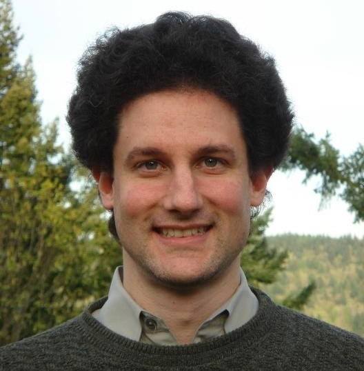
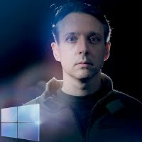
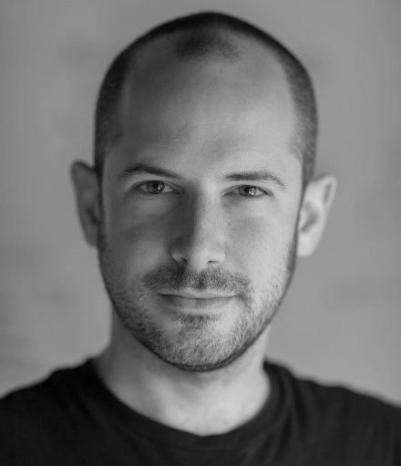
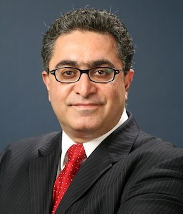
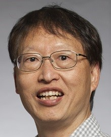
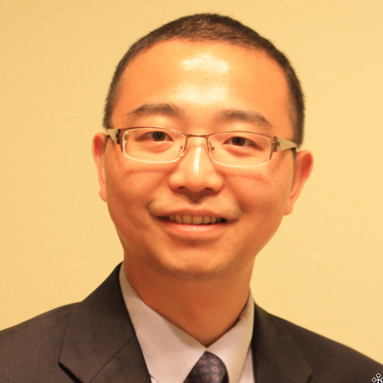

Two panel sessions are planned at ICME 2016.
1. Making the Virtual Real: The Future of Augmented and Virtual Reality
Time: 13:00-14:20, Tuesday, July 12, 2016
Room: Grand III
Augmented
and Virtual Reality (AR/VR) are emerging technologies that both blur
the boundary between the physical and digital worlds; AR can seamlessly
blend the physical and digital content, enhancing the real world
experience, while VR completely immerses the user in digital content,
enhancing the virtual experience. Both AR and VR involve multiple media
from audio to haptics, with the core technical disciplines of the
Multimedia research community all being highly applicable. It is
commonly believed that the widespread commercialization of AR and VR
could well be as impactful to the future of the human experience as the
introduction of radio and television in the past.
After
nearly 50 years of research and development, 2016 promises to be a
breakout year for AR and VR. Many of the advances are taking place in
Seattle, US, in development at companies like Google, Microsoft,
Facebook, and Valve, a thriving start-up community, and research labs
at the University of Washington and other academic institutions.
With
this panel, we aim to give an overview of the future of AR and VR. We
have collected together some of the key players who will discuss 1) the
importance of AR and VR as new media of high relevance to the
Multimedia community, 2) the timeliness of 2016 as a breakout year for
AR/VR technologies, and 3) what can be expected over the next 5 to 10
years of development in the fields.
Moderator
The panel is moderated by our keynote speaker, Mark Billinghurst (University of South Australia).
Panelists
|

|
Steve Seitz
(University of Washington and Google) leads the Virtual Reality effort
in Google's Seattle office, including Google Jump and Cardboard Camera.
He is also Robert E. Dinning Professor in the Department of Computer
Science and Engineering at the University of Washington. He received
his B.A. in computer science and mathematics at the University of
California, Berkeley in 1991 and his Ph.D. in computer sciences at the
University of Wisconsin in 1997. Following his doctoral work, he spent
one year visiting the Vision Technology Group at Microsoft Research and
the subsequent two years as an Assistant Professor in the Robotics
Institute at Carnegie Mellon University. He joined the faculty at the
University of Washington in July 2000. He co-authored papers that have
been awarded the David Marr Prize (twice) at ICCV, and the CVPR 2015
best paper award. He has received an NSF Career Award, and ONR Young
Investigator Award, an Alfred P. Sloan Fellowship, and is an IEEE
Fellow. His work on Photo Tourism (joint with Noah Snavely and Rick
Szeliski) formed the basis of Microsoft's Photosynth technology.
Professor Seitz is interested in problems in computer vision and
computer graphics. His current research focuses on 3D modeling and
Virtual Reality.
|

|
Michael J. Gourlay
(Microsoft) (@MiJaGourlay) works as a Principal Development Lead in the
Environment Understanding group of Analog R&D, on augmented reality
platforms such as HoloLens. He leads the team that develops the
tracking system, the technology underlying rendering world-locked
holograms. His team also developed the surface reconstruction
(SR) solution (branded Spatial Mapping) for Windows Holographic.
SR gives devices a virtual representation of real-world surfaces,
permitting virtual objects to appear to interact with real-world
objects, both visually and physically.
Michael previously
worked at Electronic Arts (EA Sports) as the Software Architect for the
Football Sports Business Unit, the group that makes Madden NFL. He also
developed curricula for and taught at the University of Central Florida
(UCF) Florida Interactive Entertainment Academy (FIEA). He is also a
Subject Matter Expert for Studio B Productions, and writes articles for
Intel on parallelized computational fluid dynamics simulations for
video games.
|
|
 |
Jeremy Selan
(Valve Corporation) is a developer at Valve working on VR technology.
Current interests include display and optics technologies, the merging
of live and synthetic imagery, and the perception of reality. Before
joining Valve, Jeremy worked in the motion-picture visual effects
industry and is a two time Scientific and Technical Achievement Academy
Award winner.
|
2. Multimedia Research and Products: Increasing Impact (tentative)
Time: 13:00-14:20, Thursday, July 14, 2016
Room: Grand III
In
this panel, we examine the impact of the research being done by the
community: its trajectory, and how to amplify it. Panelists are leaders
in each of ICME’s sponsoring societies: Circuits and Systems,
Communications, Computer, and Signal Processing Societies. They will
address questions such as the following, and engage the audience in a
discussion of our future.
- What
were the most significant advances in multimedia over the last 5-10
years and how are they impacting the current research and future
products?
- What will be
disruptive to multimedia research and products in the next 5-10 years?
What are the most innovative lines of research today?
- What can we do together as a community to further advance multimedia research and its impact on society?
- Are there any emerging areas that are not being enough addressed by the ICME community that deserve more attention?
Moderator & Panelists
|
|
Adriana Dumitras enjoys working on a widely loved product: Skype (now
part of Microsoft), at the intersection of applied research, product
development and university collaborations. She has held leadership and
technical roles with Microsoft, Apple Inc., AT&T Labs - Research,
and others. Adriana's work has spanned the video and multimedia
processing and communications, combining signal processing, computer
vision, machine learning, and data analytics tools. She authored and
co-authored more than 100 publications, presentations, and 80 issued US
patents. Selected professional activities include: technical co-chair
of the IEEE Workshop on Multimedia Signal Processing (2006), area
editor of columns and forums at the IEEE Signal Processing Magazine
(2006-2008), guest co-editor of the special issue "Network-aware
multimedia processing and communication" in the IEEE Special Journal
and Selected Topics in Signal Processing (2007), guest co-editor of the
special issue "Video Analysis and Coding for Robust Video Transmission"
in the Eurasip Journal on Applied Signal Processing (2006), and
technical committee member of the IEEE Image, Video and Multimedia
Signal Processing Technical Committee (2013-2015). Adriana is a senior
member of IEEE.
|
|

|
Touradj EBRAHIMI is currently Professor at EPFL heading its Multimedia
Signal Processing Group. He is also acting as Convener of JPEG
standardization committee. Prof. Ebrahimi is an active contributor to
MPEG, JPEG and SC29. He is a co-founder of Genista SA, a high-tech
start-up company in the field of multimedia quality metrics. In 2002,
he founded Emitall SA, start-up active in the area of media security
and surveillance. Prof. Ebrahimi is a member of Scientific Advisory
Board of various start-up and established companies in the general
field of Information Technology. He has served as Scientific Expert and
Evaluator for Research Funding Agencies such as those of European
Commission, as well as a number of Venture Capital Companies active in
the field of Information Technologies and Communication Systems. His
research interests include still, moving, and 3D image processing and
coding, visual information security (rights protection, watermarking,
authentication, data integrity, steganography), new media, and human
computer interfaces (smart vision, brain computer interface). He is the
author or the co-author of more than 200 research publications, and
holds 14 patents. Prof. Ebrahimi is a member of IEEE, SPIE, ACM and
IS&T.
|
|

|
Jenq-Neng Hwang received his Ph.D. degree from the University of
Southern California in 1989. He then joined the Department of
Electrical Engineering of the University of Washington in Seattle,
where he has been promoted to Full Professor since 1999. He served as
the Associate Chair for Research from 2011 to 2015 and is currently the
Associate Chair for Global Affairs in the EE Department. He has written
more than 300 journal, conference papers and book chapters in the areas
of multimedia signal processing, and multimedia system integration and
networking, including a textbook on “Multimedia Networking: from Theory
to Practice,” published by Cambridge University Press. He is currently
an advisory member of Multimedia Technical Committee (MMTC) of IEEE
Communication Society and also a member of Multimedia Signal Processing
(MMSP) and Internet of Things (IoT) of IEEE Signal Processing Society.
He served as an associate editor for IEEE T-SP, T-NN, T-CSVT, IEEE
T-IP, and IEEE Signal Processing Magazine, as well as an Editor for
JISE, ETRI, JSPS, and IJDMB. He was the Program Co-Chair of ICASSP 1998
and ISCAS 2009, and is the Program Co-Chair for ICME 2016. Dr. Hwang is
a fellow of IEEE since 2001.
|
|

|
As the General Manager of TCL Research America, Dr. Haohong Wang
oversees the R&D activities in North America for TCL, a global
leader in consumer electronics with over 75,000 employees worldwide and
ranks the 3rd in TV and the 5th in mobile phone business. Dr. Wang is a
recognized leader in multimedia and communication societies, a
recipient of the IEEE MMTC Distinguished Service Award, a co-author of
five books, and an inventor of over 70 US patents and pending
applications. Before joining TCL, he held technical and management
positions at AT&T, Catapult, Qualcomm, Marvell, and Cisco. Dr.
Wang’s current research areas include multimedia computing and mobile
systems and services. He is the Steering Committee Chair of IEEE ICME.
He chaired the IEEE Multimedia Communications Technical Committee, and
the IEEE Technical Committee on Human Perception and Multimedia
Computing. He has been the Editor-in-Chief of the Journal of
Communications, and Vice President of Asia-Pacific Signal and
Information Processing Association. He also chaired the IEEE GLOBECOM
2010, IEEE ICME 2011, IEEE VCIP 2014, IEEE ISM 2015 and ACM Multimedia
2017. He received his Ph.D. from Northwestern University, Evanston,
USA.
|

|
Dr. John R. Smith is an IBM Fellow and Manager of Multimedia and Vision
at IBM T. J. Watson Research Center. He leads IBM’s development of IBM
Multimedia Analysis and Retrieval System (IMARS), Intelligent Video
Analytics (IVA), and IBM Watson Developer Cloud Visual Recognition and
Visual Insights. Dr. Smith is a long-time participant in the NIST
TRECVID video retrieval evaluation and co-led the development of the
Large Scale Concept Ontology for Multimedia (LSCOM) that has formed the
basis of multiple TRECVID evaluation tasks. Dr. Smith earlier served as
Chair, MPEG Multimedia Description Schemes Group and led the
development of multiple parts of the MPEG-7 Multimedia Content
Description Standard and MPEG-21 Digital Framework Standard. During his
Ph.D. studies at Columbia University, Dr. Smith conducted some of the
earliest work on content-based image and video retrieval (VisualSEEk,
WebSEEk). Dr. Smith served as Editor-in-Chief of IEEE Multimedia from
2010 – 2014 and will serve as co-General Chair of ACM Intl. Conf. on
Multimedia Retrieval (ICMR-2016) in New York City. Dr. Smith is a
Fellow of IEEE.
|
|